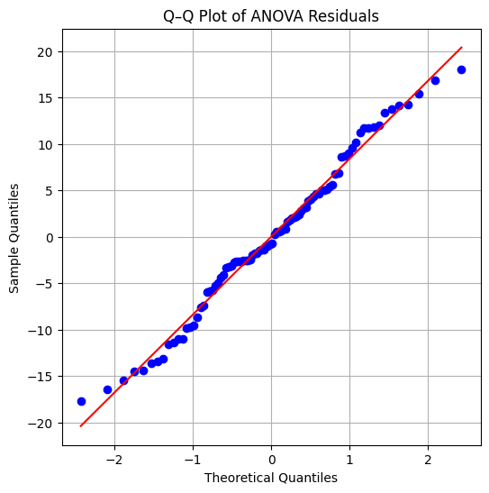

9.0 מאיפה באנו ולאן אנחנו הולכים
יחידה 8 נגמרה בשלושה חובות פתוחים. דחינו את H0 וידענו רק ש"לא כל התוחלות שוות" — אבל בין מי למי ההבדל? (חוב 1). המבחן היה מובהק — אבל כמה גדול ההבדל בפועל? (חוב 2). וכל הבניין נשען על שלוש הנחות — מה עושים כשהן נשברות? (חוב 3). היחידה הזאת פורעת את שלושתם.
וזו גם היחידה הכי "מעשית" בקורס: כמעט כל מה שנלמד כאן מסודר בשתי הטבלאות הגדולות של דף העזר שלך — טבלת ההחלטה (מצב ← מבחן גלובלי ← Post-Hoc) וטבלת ההנחות. עד סוף היחידה תדע לקרוא כל שורה בהן ולהבין למה היא שם. שלוש שאלות מבחן (17, 18, 19) גרות כאן, ושתי מעבדות 🎛️ מחכות: מעבדת FWER ונווט ההחלטה.
9.1 הבעיה: כל השוואה נוספת היא עוד כרטיס הגרלה לטעות
📓 תוכן מקובץ סיכום שיעור 9 נפתח בשאלה מהכיתה, וזו בדיוק השאלה הנכונה: "למה לעשות Tukey HSD אם אני יכול פשוט להריץ מבחן t (מיחידה 3!) בין כל זוג קבוצות, על כל הקומבינציות?" בוא נבין למה זה רעיון מסוכן.
כל מבחן בודד ברמת α=0.05 הוא כמו מטבע מוטה: 5% סיכוי ל"אזעקת שווא" (טעות סוג I — לדחות H0 נכונה, זוכר מיחידה 3?). מבחן אחד — סיכון קטן וידוע. אבל אם זורקים את המטבע הזה שוב ושוב, על כל זוג קבוצות... מתישהו הוא ייפול:
הדוגמה המודגשת מהשיעור: 10 השוואות ברמת 0.05 ⇐ \(1-(0.95)^{10}\approx 0.40\) — 40% סיכוי לפחות למובהקות-שווא אחת! ה"ביטוח" של 5% שחשבת שיש לך — נמס.
וכמה השוואות באמת יש? עם \(k\) קבוצות מספר הזוגות הוא \(\binom{k}{2}=\frac{k(k-1)}{2}\) — כבר עם 4 קבוצות זה 6 השוואות, ועם 10 קבוצות 45. תראה במו עיניך כמה מהר זה מתדרדר:
התיקון הפשוט ביותר לבעיה הוא תיקון בונפרוני: אם מריצים m מבחנים, מריצים כל אחד ברמת \(\alpha_{new}=\alpha/m\) — מחלקים את "תקציב הטעות" שווה בשווה. פשוט, עובד תמיד, אבל כפי שתראה עוד מעט — לפעמים מחמיר מדי.
🔎 דיוק למתקדמים: מתי הנוסחה מדויקת ומתי היא רק קירוב
הנוסחה \(1-(1-\alpha)^m\) מניחה שהמבחנים בלתי תלויים. אבל השוואות זוגיות על אותם נתונים תלויות זו בזו (הקבוצה "פרונטלי" משתתפת בכמה זוגות!), ולכן עבורן זה קירוב, לא שוויון. החדשות הטובות: לתיקון בונפרוני לא אכפת — מתקיים תמיד, גם עם תלות, החסם \(FWER \le m\cdot\alpha_{new}\), ולכן בחירת \(\alpha_{new}=\alpha/m\) מבטיחה \(FWER\le\alpha\) בכל מקרה. זו הסיבה שבונפרוני נחשב "חסין לכל מזג אוויר" — וגם הסיבה שהוא לפעמים שמרני מדי.
9.2 Tukey HSD: כל הזוגות, אלפא אחת — שאלה 18
Tukey HSD (Honestly Significant Difference — "הבדל מובהק ביושר", והשם כבר מספר הכל) בודק את כל זוגות הקבוצות, אבל בנוי כך שה-FWER של כל המשפחה יחד נשאר 0.05 — לא 5% פר מבחן אלא 5% על הכול. לכל זוג ההשערות הן \(H_0:\mu_i=\mu_j\) מול \(H_1:\mu_i\neq\mu_j\) — 📓 תוכן מקובץ סיכום ניסוח שונה במקצת מזה של יחידה 8, אבל כפי שהמרצה ציין: בסוף זה אותו דבר.
🔎 בונוס: מה הרעיון מאחורי "התפלגות הטווח"?
כשאתה בוחן את הזוג עם ההפרש הכי גדול מבין \(\binom{k}{2}\) זוגות, אתה בעצם עושה cherry-picking — גם תחת H0, הפער בין הממוצע הכי גבוה לכי נמוך מבין k קבוצות גדול בהרבה מפער בין שתי קבוצות שנבחרו מראש. התפלגות הטווח המסטודנט היא בדיוק ההתפלגות של \((\bar{y}_{max}-\bar{y}_{min})/SE\) תחת H0 — היא "יודעת" שבחרת את הקיצוניים, ולכן הערך הקריטי שלה גדל עם k. ודיוק חשוב לגבי הכיוון השני (בסיכום הופיע הפוך — ראה דף התיקונים): יותר תצפיות ⇐ יותר דרגות חופש לרעש ⇐ ערך קריטי קטן יותר ⇐ מבחן פחות מחמיר ויותר עוצמה. מה שמחמיר את המבחן זה יותר קבוצות, לא יותר תצפיות.
כך זה נראה על הנתונים של יחידה 8 (שלוש שיטות ההוראה, ANOVA יצא F=17.57 — מובהק):
from statsmodels.stats.multicomp import pairwise_tukeyhsd
tukey = pairwise_tukeyhsd(df['score'], df['method']) # FWER=0.05
print(tukey)| group1 | group2 | meandiff | p-adj | lower | upper | reject |
|---|---|---|---|---|---|---|
| Frontal | Hybrid | 5.52 | 0.034 | 0.34 | 10.70 | ✔ True |
| Frontal | Online | 12.83 | 0.000 | 7.65 | 18.01 | ✔ True |
| Hybrid | Online | 7.31 | 0.003 | 2.14 | 12.49 | ✔ True |
איך קוראים את הפלט: meandiff — הפרש הממוצעים (group2 פחות group1); p-adj — ה-p אחרי ההתאמה לריבוי השוואות (זה שמשווים ל-0.05); lower/upper — רווח סמך להפרש, וכשהוא לא כולל את 0 ⇐ ההפרש מובהק; reject — השורה התחתונה. כאן כל שלושת הזוגות מובהקים: כל שיטה באמת שונה מכל שיטה. ודקות אחת ששווה לדעת: אלה רווחי סמך סימולטניים — הביטחון של 95% מתייחס לכל שלושת הרווחים יחד, לא לכל אחד בנפרד.
9.3 השוואות מתוכננות מראש: מתי Tukey דווקא מזיק — שאלה 17
נשמע שTukey מושלם — אז למה שלא נשתמש בו תמיד? 📓 תוכן מקובץ סיכום זו הייתה כותרת מודגשת בשיעור: "מדוע לא כדאי להשתמש ב-Tukey כאשר יש השוואות מתוכננות מראש?" והתשובה, בבולד: אובדן עוצמה סטטיסטית.
נזכיר מיחידה 3, בניסוח של המרצה: 📓 תוכן מקובץ סיכום עוצמה = \(1-\beta\) = "אם באמת קיים אפקט בנתונים, מה הסיכוי שנצליח לגלות אותו". ועכשיו שרשרת ההיגיון של השיעור: Tukey מתקן עבור כל \(\binom{k}{2}\) הזוגות ⇐ קריטריון מחמיר יותר לכל השוואה ⇐ צריך הבדל גדול יותר כדי לצאת מובהק ⇐ פחות אזעקות שווא (טוב!) אבל יותר פספוסים של אפקטים אמיתיים (רע!). אם מראש עניינו אותך רק 2 השוואות מתוך 6 — שילמת "ביטוח" על 4 השוואות שבכלל לא רצית, והמחיר הוא אולי לפספס ממצא אמיתי: p=0.03 של השוואה שתכננת יכול להפוך ל-p-adj=0.08 ולהיעלם.
יש מעט השוואות שתכננת מראש? ⇐ t-tests + בונפרוני רק עליהן. (למה לא Tukey? כי הוא מתקן על זוגות שלא ביקשת ומאבד עוצמה.)
שים לב לסימטריה היפה: כל כלי מנצח במגרש שלו, ואף אחד לא מנצח בשניהם.
9.4 בדיקת ההנחות: Levene, Shapiro-Wilk ו-QQ Plot
עכשיו לחוב השלישי. ביחידה 8 הצגנו את שלוש ההנחות: תצפיות בלתי-תלויות, שגיאות נורמליות \(\varepsilon_{ij}\sim N(0,\sigma^2)\), ואותה \(\sigma^2\) בכל הקבוצות. בלעדיהן — השרשרת נורמלית←חי-בריבוע←F קורסת וה-p-value פשוט לא נכון. את אי-התלות אי אפשר לבדוק סטטיסטית (היא נובעת מתכנון הניסוי — כך גם בטבלת דף העזר: "מתכנון המחקר, אין תיקון סטטיסטי"). את שתי האחרות בודקים, ולכל אחת מבחן משלה:
stats.levene(frontal, hybrid, online) ⇐ p=0.664 — אין עדות להפרה, אפשר להמשיך.
ועכשיו לנקודה שהמרצה הדגיש שיכולה להיות שאלה תיאורטית במבחן 📓 תוכן מקובץ סיכום — על מה בדיוק מריצים את Shapiro?
העין המקצועית: QQ Plot
Shapiro-Wilk סובל מבעיה במדגמים גדולים: הוא רגיש מדי — עם אלפי תצפיות הוא ידחה נורמליות בגלל סטיות זעירות וחסרות משמעות. לכן משלבים תמיד בדיקה גרפית: QQ Plot, שמצייר את הקוונטילים של הנתונים (ציר Y) מול הקוונטילים התיאורטיים של התפלגות נורמלית (ציר X). אם הנתונים נורמליים — הנקודות יושבות על קו ישר של 45°:

stats.probplot(model.resid, dist='norm', plot=plt)). למה הגרף הזה מרגיע? הנקודות צמודות לקו האדום לכל אורכו — כלומר בכל רמת קוונטיל, השאריות בדיוק "בגובה" שנורמליות מנבאת. שים לב במיוחד לקצוות: שם נורמליות נשברת בדרך כלל, וכאן גם הם על הקו. יחד עם Shapiro (p גדול) — הנחת הנורמליות סבירה בהחלט.הקצוות מתקפלים פנימה (שמאל מעל, ימין מתחת — S הפוכה) ⇐ זנבות קלים: פחות קיצוניים מהצפוי (כמו התפלגות אחידה).
ולפרוטוקול: המרצה אמר שלא ייכנס לעומק הזנבות — כלל האצבע מספיק. וגם: סטייה קלה בקצוות בלבד לרוב לא קריטית, ANOVA די עמיד לסטיות קטנות מנורמליות. ה-QQ הוא בדיקה ויזואלית, לא מבחן השערות — אין לו p-value.
9.5 תוכנית ב' וגם ג': Welch ו-Kruskal-Wallis — שאלה 19
אז בדקנו — ומשהו נשבר. מה עכשיו? לכל הפרה יש מחליף ייעודי, וזה בדיוק מבנה טבלת ההחלטה של דף העזר. (הערת שקיפות: את שני המחליפים האלה הסיכום של החבר לא מכסה — הם מגיעים מהמחברות של ההרצאה ומדף העזר, והם חיוניים לשאלה 19.)
נשבר שוויון השונויות ⇐ Welch ANOVA + Games-Howell
מכיר את הרעיון הזה! ביחידה 3 פגשנו את מבחן Welch t לשתי קבוצות עם שונויות שונות — Welch ANOVA הוא בדיוק אותו רעיון מוכלל ל-k קבוצות: במקום להניח \(\sigma^2\) אחת, כל קבוצה מקבלת משקל לפי השונות שלה — קבוצה "רועשת" נחשבת פחות, כי סומכים עליה פחות. גם דרגות החופש מתוקנות ויוצאות לא-שלמות (כמו ה-12.98 שראינו ביחידה 3!).
import statsmodels.stats.api as sms
sms.anova_oneway(df['score'], df['method'], use_var='unequal') # unequal = Welch
# pvalue = 4.9e-07ואם המבחן הגלובלי מובהק — ל-post-hoc לוקחים את Games-Howell: "ה-Tukey של עולם השונויות השונות". המכניקה שלו היא ממש חיבור של שני דברים שאתה כבר יודע: לכל זוג מריצים Welch t (SE ודרגות חופש בדיוק בנוסחאות Welch-Satterthwaite מיחידה 3!) ואת הסטטיסטי משווים להתפלגות הטווח המסטודנט (מ-9.2). בפייתון: pg.pairwise_gameshowell(data=df, dv='score', between='method') — והפלט כולל גם עמודת hedges, גודל אפקט לכל זוג שנפגוש ב-9.6.
🔎 בונוס לסקרנים: הנוסחה המלאה של Welch ANOVA
$$F_W = \frac{\sum w_i(\bar{y}_{i.} - \bar{y}_w)^2/(k-1)}{1 + \frac{2(k-2)}{k^2-1}\sum \frac{(1-w_i/\sum w_j)^2}{n_i-1}} \qquad w_i=\frac{n_i}{s_i^2}$$
פענוח: \(w_i\) — המשקל של קבוצה \(i\): גדל עם גודל המדגם וקטן עם השונות (קבוצה רועשת = משקל נמוך); \(\bar{y}_w\) — ממוצע כללי משוקלל לפי המשקלים; המונה — "שונות בין הקבוצות" בגרסה משוקללת; המכנה — תיקון שמכייל את ההתפלגות. התוצאה מתפלגת בקירוב \(F(\tilde{df}_1,\tilde{df}_2)\) עם דרגות חופש מתוקנות לא-שלמות. לא צריך לזכור את זה למבחן — צריך לזכור את הרעיון: שקלול לפי אמינות, ומתי משתמשים.
נשברה הנורמליות ⇐ Kruskal-Wallis + Dunn
כשההתפלגות עצמה לא נורמלית (או שיש חריגים קיצוניים, או שהסולם בכלל אורדינלי), עוברים לתוכנית ג': לוותר על הערכים ולעבוד עם דירוגים. מאחדים את כל התצפיות, מדרגים מ-1 עד N, ושואלים: האם קבוצה מסוימת "תופסת" באופן שיטתי את הדירוגים הגבוהים?
על נתוני שיטות ההוראה: stats.kruskal(frontal, hybrid, online) ⇐ H=27.00, p=1.37e-06 — מובהק גם בדרך הלא-פרמטרית. ואחרי KW מובהק, ה-post-hoc הוא מבחן Dunn (השוואות זוגיות מבוססות דירוגים) — והוא, בניגוד ל-Tukey, כן מקבל תיקון בונפרוני: sp.posthoc_dunn(data, val_col='value', group_col='group', p_adjust='bonferroni'). בדוגמה מההרצאה (נתוני גמא מוטים בכוונה, 3 קבוצות): KW נתן H=10.19, p=0.0061, ו-Dunn+בונפרוני מצא: A-C p=0.0097 ✔, B-C p=0.033 ✔, A-B p=1.0 ✘ — רק קבוצה C באמת שונה מהשתיים האחרות. (כן, p של 1.0 — בונפרוני מכפיל את ה-p במספר ההשוואות וחותך ב-1.)
המפה המלאה — וזה בדיוק דף העזר שלך
| מצב | מבחן גלובלי | Post-Hoc | בונפרוני? |
|---|---|---|---|
| שונויות שוות ונורמליות | One-Way ANOVA | Tukey HSD | לא |
| שונויות לא שוות (Levene מובהק) | Welch ANOVA | Games-Howell | לא |
| אין נורמליות (Shapiro מובהק / אורדינלי) | Kruskal-Wallis | Dunn | כן |
| השוואות מתוכננות מראש | ANOVA | Contrast t-tests | כן |
| השוואה בודדת (2 קבוצות) | t-test | אין | לא |
הטבלה הזאת נמצאת מילה-במילה בדף העזר — לא צריך לשנן אותה, צריך להבין אותה. בשביל זה בנינו לך נווט:
9.6 גודל אפקט: מובהק — אבל כמה גדול?
החוב האחרון. 📓 תוכן מקובץ סיכום ההדגשה מהשיעור: מובהקות יודעת להגיד רק שיש הבדל — לא כמה הוא גדול; וגודל אפקט מתייחס גם לפיזור הנתונים, לא רק להפרש הממוצעים. את העיקרון הזה פגשת כבר ביחידה 3 עם Cohen's d — עכשיו נכליל אותו ל-k קבוצות. ותזכור את ההבטחה מיחידה 8: הפס הכחול במעבדת האות והרעש — "החלק של SSB מתוך SST" — הנה הוא מקבל שם:
| מדד | קטן | בינוני | גדול |
|---|---|---|---|
| η² / ω² (אפקט כולל של הגורם) | 0.01 | 0.06 | 0.14 |
| Cohen's d / Hedges' g (זוג קבוצות) | 0.2 | 0.5 | 0.8 |
9.7 סיכום היחידה + מה חשוב לבחינה
| מושג | שורה תחתונה |
|---|---|
| FWER | \(1-(1-\alpha)^m\) — הסיכוי ללפחות אזעקת-שווא אחת; 10 השוואות ⇐ 40%! |
| Tukey HSD (Q18) | כל הזוגות עם FWER=0.05 כולל; q מול התפלגות הטווח, לא t; בלי בונפרוני נוסף |
| מתוכננות מראש (Q17) | Tukey משלם על כל הזוגות ⇐ אובדן עוצמה; במקום: t-tests + בונפרוני α/m |
| בדיקת הנחות | Levene לשונויות, Shapiro+QQ לנורמליות (על השאריות יחד — בזכות המרכוז); מקווים ל-p גדול |
| Levene נכשל | Welch ANOVA (שקלול לפי שונות, df לא שלמות) ⇐ Games-Howell |
| Shapiro נכשל / אורדינלי (Q19) | Kruskal-Wallis ("ANOVA על דירוגים", H~χ²ₖ₋₁) ⇐ Dunn + בונפרוני |
| גודל אפקט | η²=SSB/SST (=R²); ω² מתוקן וקטן ממנו; סרגל 0.01/0.06/0.14 — נפרד מסרגל d/g! |